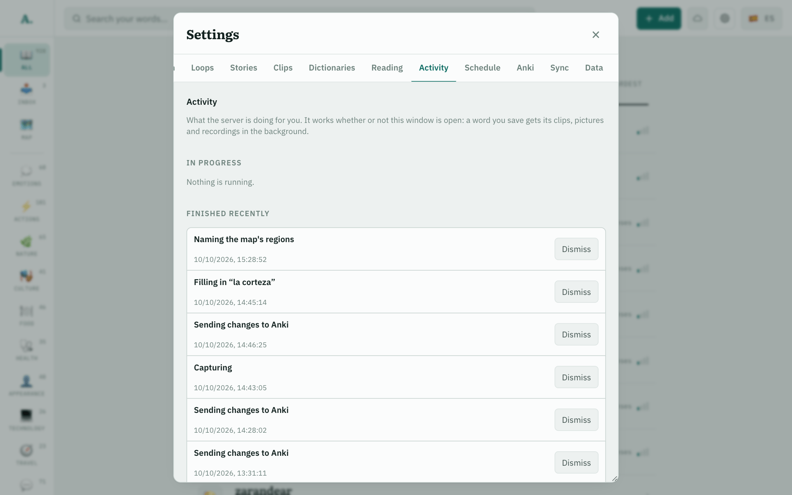

Saveword +
enrich job, one transaction1 · Clipsthe corpus retrieves, one model call selects and translates
2 · Picturesone brief call for the word, one image call for each sense
3 · Recordingsthe word and its sentences, kept as Opus
Run twice, writes nothingA job names the word; each step works out what is still missing.
A chain of providersA call falls through to the next model on a rate limit, a server error, a timeout or an unusable answer; never on a bad credential.
One job in the server's logs, joined by its id
13:43:05 job start id=zcvcdzd11sbfp17 kind=enrich trigger=ingest
13:43:09 job step id=zcvcdzd11sbfp17 step=clips state=done
13:43:11 brief gemini-free:gemini-3.5-flash-lite ok in 1.59s rid=zcvcdzd11sbfp17
13:44:14 picture vertex:gemini-3.1-flash-lite-image ok in 5.26s rid=zcvcdzd11sbfp17
13:45:14 picture vertex:gemini-3.1-flash-lite-image ok in 4.73s rid=zcvcdzd11sbfp17
13:45:14 job step id=zcvcdzd11sbfp17 step=pictures state=done
13:45:14 job step id=zcvcdzd11sbfp17 step=pronunciations state=skipped
13:45:14 job end id=zcvcdzd11sbfp17 kind=enrich state=done

Pictures are paced at one a minute, the provider's known allowance, so the two above are a minute apart.
MeasuredNo JSON Schema is sent to any model. With one, clip translations grew from 61 characters to over 1,000 and three calls in four timed out.